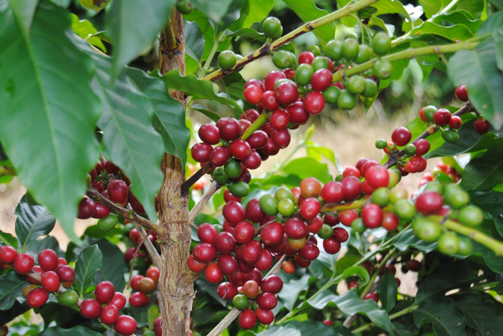
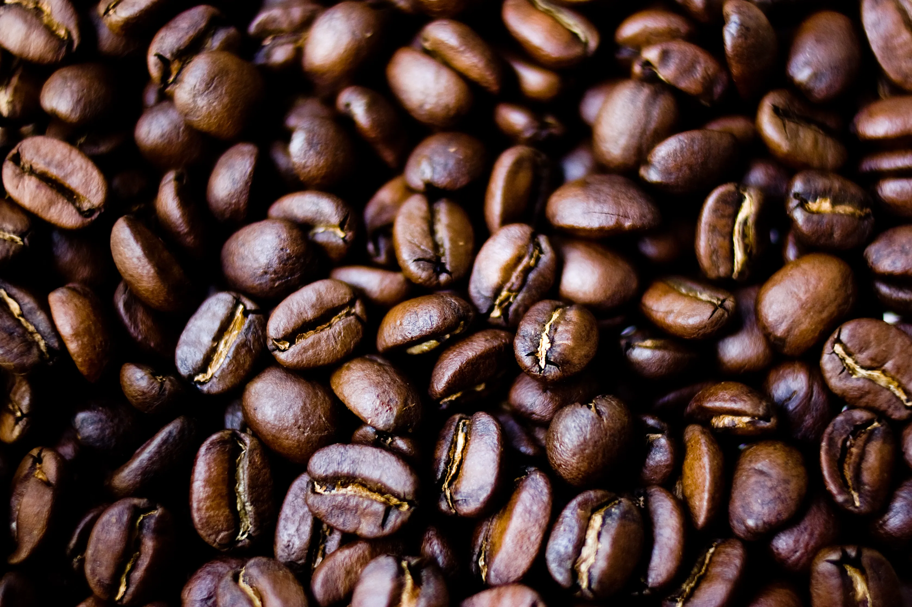
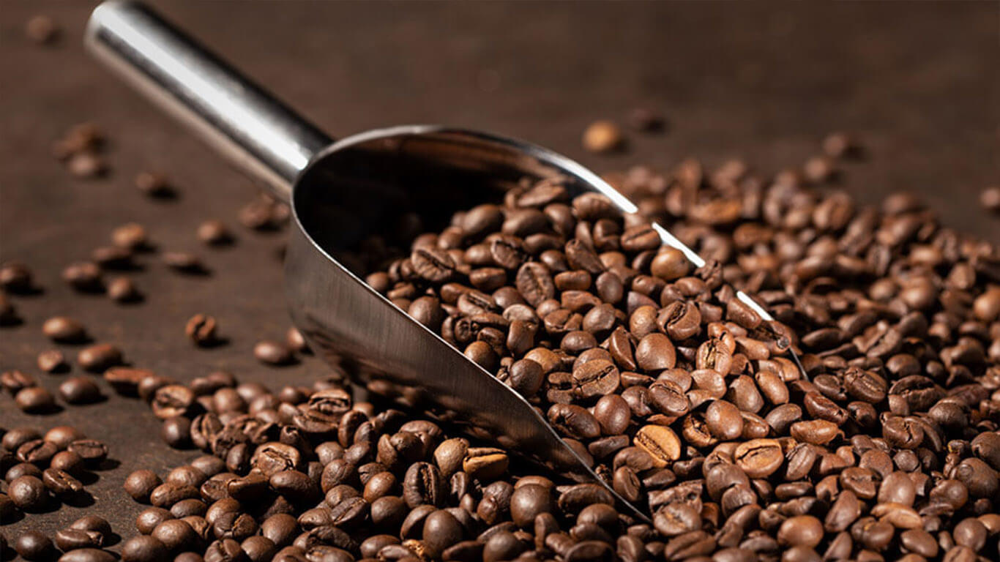
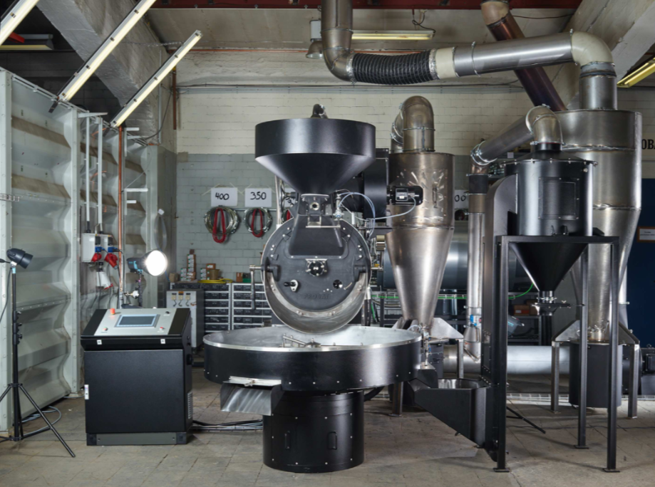

Unpicked coffee berries are coffee cherries that have not been picked from the coffee tree.

Fresh coffee is whole bean coffee within 2 weeks of the roast date.

Roasting coffee transforms the chemical and physical properties of green coffee beans into roasted coffee products.

A commercial coffee roaster is a machine that is used to roast coffee beans.
Coffee can be roasted with ordinary kitchen equipment (frying pan, grill, oven, popcorn popper) or by specialised appliances. A coffee roaster is a special pan or apparatus suitable to heat up and roast green coffee beans. The vast majority of coffee is roasted commercially on a large scale, but small-scale commercial roasting has grown significantly with the trend toward "single-origin" coffees served at specialty shops. Some coffee drinkers even roast coffee at home as a hobby in order to both experiment with the flavor profile of the beans and ensure themselves of the freshest possible roast.